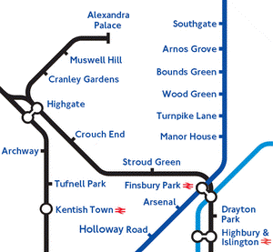

The Extended Process

Motivation
Improve performance
Reduce selection of superfluous axioms
Cope with implementation realities
Features
Syntactic Relevance Ordering
Efficient and Greedy Termination
Incomplete and Inadequate Models
Aggressive, Batch, and Limited Selection
Initial and Final Proof Attempts